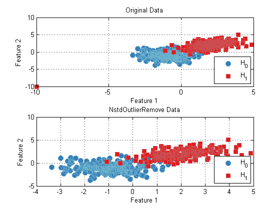

Outlier removal in the Pattern Recognition Toolbox
Often, in real data sets, there exist samples that are considered outliers, that for whatever reason, do not accurately represent the actual data. It is often beneficial to remove outliers from data prior to training, as they can badly skew results. The Pattern Recognition Toolbox provides several functions for the removal of outliers.
Contents
Removal of missing or non-finite data
In some data sets, it is possible that some samples have missing or non-finite elements, that need to be removed. Missing data is commonly marked as NaN. As a simple example, consider the following:
dataSet = prtDataGenUnimodal; % Load a data Set outlier = prtDataSetClass([NaN NaN],1); % Create and insert dataSet = catObservations(dataSet,outlier); % an Outlier % Create the prtOutlierRemoval object, specifying that on run, any NaNs % will be removed. outRemove = prtOutlierRemovalMissingData('runMode','removeObservation'); outRemove = outRemove.train(dataSet); % Train and run dataSetNew = outRemove.run(dataSet);
Run mode options
The above code removes all NaN data from the data set when the run function is called. The runMode property specifies what the outlier removal object should do when a data member is determined to be an outlier. There are four options for this property:
'noAction' - When running the outlier removal action, do
nothing. This ensures that the outlier removal action outputs
data sets of the same size as the input data set. 'replaceWithNan' - When running the outlier removal action
replace outlier values with nans. This ensures that the
outlier removal action outputs data sets of the same size as
the input data set. 'removeObservation' - When running the outlier removal action,
remove observations where any feature value is flagged as an
outlier. This can change the size of the data set during
running and can result in invalid cross-validation folds. 'removeFeature' - When running the outlier removal action,
remove features where any observation contains an outlier.Removal of outliers beyond a number of standard deviations
Another common outlier removal technique is to remove any data members that lie beyond a certain number of standard deviations from the average data member. For example:
dataSet = prtDataGenUnimodal; % Load a data Set outlier = prtDataSetClass([-10 -10],1); % Create and insert dataSet = catObservations(dataSet,outlier); % an outlier % Create the prtOutlierRemoval object nStdRemove = prtOutlierRemovalNStd('runMode','removeObservation'); nStdRemove = nStdRemove.train(dataSet); % Train and run dataSetNew = nStdRemove.run(dataSet); % Plot the results subplot(2,1,1); plot(dataSet); title('Original Data'); subplot(2,1,2); plot(dataSetNew); title('NstdOutlierRemove Data');
Notice in the above plot, the outlier at [-10 -10] has been removed.
All outlier removal objects in the Pattern Recognition Toolbox have the same API as discussed above. For a list of all the different objects, and links to their individual help entries, A list of commonly used functions